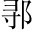

吳王夫扶。差敗越於夫椒，報槜醉。李也夫椒，吳縣西南太湖中椒山。槜李，今嘉興槜李城。定公十四年，越敗吳於槜李，闔廬傷足而死。至是，夫差所謂三年乃報越也。。遂入越。越子勾踐。以甲楯閏上聲。五千保於會膾。稽會稽，越山名。，使大夫種因吳太宰嚭痞。○種，越大夫名。嚭，故楚臣，奔吳為太宰，寵幸於夫差，故種因之。以行成求成於吳。。吳子將許之。
伍員雲。○子胥也。曰：「不可二字斷。。臣聞之：「樹德莫如滋，去上聲。疾莫如盡人之植德，如植木焉，欲其滋長。人之去惡，如治病然，欲其淨盡。○先徵之格言，重下句。。」昔有過歌。澆堯去聲。殺斟灌以伐斟尋。，滅夏後相去聲。○過，國名。澆，寒浞子。二斟，夏同姓諸侯。相，啟之孫。羿逐帝相依二斟。寒浞篡羿，因其室，生澆及豷，封澆於過，封豷於戈。浞使澆滅二斟，殺帝相。，後緡民。方娠震。○後緡，相妻，有仍國之女。娠，懷身也。，逃出自竇，歸於有仍自穴逃出，而歸於父母家。，生少去聲。康焉生遺腹子，是為少康。。為仍牧正，惎忌。澆能戒之及壯，為有仍牧官之長。惎，毒也。以澆為毒害，能戒備之。。澆使椒求之椒，澆臣。求少康欲殺之。，逃奔有虞舜後封國。，為之庖正，以除其害庖正，掌膳羞之官。除，免也。賴此以得免其害。。虞思於是妻去聲。之以二姚，而邑諸綸思，虞君名。以二女妻少康。姚，虞姓。綸，虞邑。，有田一成，有眾一旅方十里為成。五百人為旅。。能布其德，而兆其謀兆，始也。，以收夏眾，撫其官職收拾夏之遺民，撫循夏之官職。；使女艾諜牒。澆，使季杼誘豷戲。○女艾，少康臣。諜，候也。諜候澆之間隙。季杼，少康子。豷，澆弟。以計引誘之。。遂滅過、戈滅澆於過，滅豷於戈。，復禹之績，祀夏配天，不失舊物恢復禹之功績，祀夏祖宗，以配上帝，不失禹之天下。○次證之往事，以申明「去疾莫如盡」之故。。今吳不如過，而越大於少康兩兩相較，警醒剴切。，或將豐之，不亦難去聲。乎言與越成，是使越豐大，必為吳難。○不可者一。！勾踐能親而務施一層。，施不失人，親不棄勞二層。。與我同壤三層。，而世為仇讎四層。。於是乎克而弗取，將又存之，違天而長掌。寇讎天與不取，故曰違天。，後雖悔之，不可食已食，猶食言之食。言欲食此悔，亦無及已。○不可者二。。姬之衰也，日可俟也吳與周同姓，而姬姓之衰，可計日而待。○泛一句。。介在蠻夷，而長寇讎，以是求伯霸。，必不行矣況吳介居蠻夷，而滋長寇讎，自保且不能，安能圖霸？以吳子喜遠功，又以求伯動之。○不可者三。。」
弗聽惑於宰嚭，而使越成。。退而告人曰：「越十年生聚，而十年教訓，二十年之外，吳其為沼乎生民聚財，富而後教，吳必為越所滅。而宮室廢壞，當為汙池。○直是目見，非為懸斷。! 」
寫少康詳，寫勾踐略；而寫少康，正是寫勾踐處，此古文以賓作主法也。後分三段，發明「不可」二字之義，最為曲折詳盡。曾不覺悟，卒許越成。不得已退而告人，說到吳其為沼，真感憤無聊，聲斷氣絕矣。